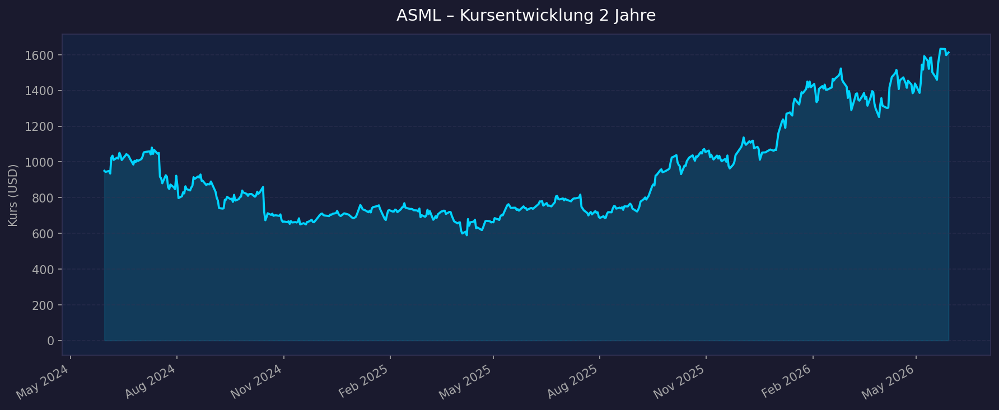
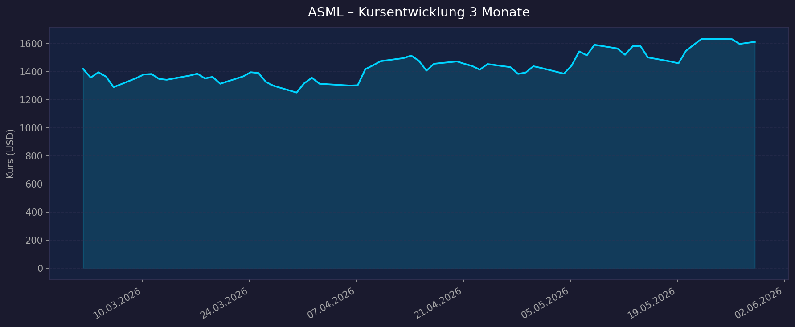

📈 1. Kursentwicklung
Aktueller Kurs: $1.612,76 (NASDAQ) / ~€1.420 (Euronext Amsterdam) | 52W-Hoch: $1.654,20 | 52W-Tief: $683,48 YTD 2026: +40% | Beta: 1,37
Chart – 2 Jahre

Chart – 3 Monate

| Zeitraum | Kurs Start | Kurs Ende | Veränderung |
|---|---|---|---|
| 2 Jahre | $949,66 | $1.612,76 | +69,8 % |
| 3 Monate | $1.420,44 | $1.612,76 | +13,5 % |
| 52W-Hoch | — | $1.654,20 | — |
| 52W-Tief | — | $683,48 | — |
| YTD 2026 | ~$1.152 | $1.612,76 | +40 % |
Kontext: Die ASML-Aktie erholte sich nach dem Kurseinbruch in H1 2025 (52W-Tief $683, bedingt durch Bedenken rund um China-Export-Beschränkungen und einen schwachen Auftragseingang im Herbst 2024) massiv. Der Q2-2025-Earnings-Tag am 16. Juli 2025 löste mit einem Volumen von 10,8 Mio. Aktien (6,5× Durchschnitt) eine starke Rally aus, die durch KI-getriebene Nachfrage bis auf aktuelle Allzeithöchststände führte.
TradingView: ASML auf TradingView
💹 2. KGV-Entwicklung (Kurs-Gewinn-Verhältnis)
Aktuelles KGV (trailing): 53,76x | Forward KGV: 33,81x | EPS trailing: $30,00
| Zeitraum | KGV (trailing) | Einordnung |
|---|---|---|
| Aktuell (Mai 2026) | 53,76× | Deutlich über 10J-Durchschnitt |
| Ende 2025 | ~37,6× | Leicht über Durchschnitt |
| Ende 2024 | ~33–38× | Im historischen Normbereich |
| Ende 2023 | ~35,4× | Im historischen Normbereich |
| Ende 2022 | ~36,0× | Im historischen Normbereich |
| 10J-Durchschnitt | ~36,3× | Referenzwert |
| 10J-Peak | ~55,5× (Q2 2024) | Historisches Hoch |
Bewertung: Das aktuelle trailing KGV von 54× liegt deutlich über dem 10-Jahres-Durchschnitt von 36×, aber unter dem historischen Peak von ~55×. Der Forward-PE von 33,8× ist dagegen moderat und spiegelt das erwartete Gewinnwachstum 2026 wider. Die Bewertungsausweitung (37× → 54× in 5 Monaten) ist primär durch die starke Kursrally 2026 (+40% YTD) getrieben.
💰 3. Sales Multiple (Kurs-Umsatz-Verhältnis / P/S)
Aktuelles P/S (TTM): 18,45× | Marktkapitalisierung: ~$621,6 Mrd.
| Zeitraum | P/S Ratio | Einordnung |
|---|---|---|
| Aktuell (Mai 2026) | 18,45× | Historisches Maximum-Niveau |
| April 2026 | ~15,57× | 64% über 10J-Median |
| Ende 2025 | ~10,5× | Über Median |
| 10J-Median | 9,50× | Referenzwert |
| 10J-Minimum | 5,21× | Günstigstes Niveau |
| 10J-Maximum | ~18,55× | Historisches Hoch |
Trend: Stark steigend — das P/S ist in wenigen Monaten von ~10,5× (Ende 2025) auf 18,45× (aktuell) angestiegen, was einer Re-Bewertung um +76% entspricht. Das aktuelle Niveau entspricht in etwa dem historischen Maximum und reflektiert das Prämium, das Investoren für das EUV-Monopol und die 2030-Wachstumsstory bereit sind zu zahlen.
📊 4. Handelsvolumen (Trading Volume)
| Zeitraum | Ø Tagesvolumen | Auffälligkeiten |
|---|---|---|
| 3-Monats-Durchschnitt | 1.712.660 Aktien | Leicht erhöhtes Interesse |
| 2-Jahres-Durchschnitt | 1.672.806 Aktien | Stabiler Langfrist-Schnitt |
| Volumen-Peak (2J) | 10.789.600 Aktien | 16.07.2025 – Q2-2025-Earnings-Tag |
Volumentrend: Stabil mit einem markanten Ausreißer am 16. Juli 2025 (Q2 2025 Ergebnisse), als ASML die Erwartungen deutlich übertraf. Das erhöhte 3M-Volumen vs. 2J-Schnitt deutet auf wachsendes Investoreninteresse im Zuge des Allzeithochs hin.
🏦 5. Insider Trades (letzte 2 Jahre)
| Datum | Name | Funktion | Transaktion | Aktien | Wert |
|---|---|---|---|---|---|
| Jan. 2025 | W.R. Allan | Board Member | Verkauf | 215 | ~$151.326 |
| Jan. 2024 | W.R. Allan | Board Member | Verkauf | 559 | ~$484.837 |
| Jan. 2024 | F.J.M. Schneider-Maunoury | CFO a.D. | Verkauf | 1.768 | ~€1.395.538 |
| Jan. 2024 | R.J.M. Dassen | CFO | Verkauf | 1.768 | ~€1.395.538 |
| Jan. 2024 | C.D. Fouquet | CEO | Verkauf | 1.768 | ~€1.395.538 |
3-Monats-Überblick: Keine Käufe oder Verkäufe in den letzten 90 Tagen gemeldet. 2-Jahres-Überblick: Ausschließlich Verkäufe – typisches Muster bei niederländischen Unternehmen im Rahmen geplanter Vergütungs-/Share-Award-Pläne. Keine Anzeichen von strategischen Insider-Käufen oder einem erhöhten Vertrauenssignal durch Führungskräfte. Die Verkäufe sind jedoch routinemäßig (Januar-Zyklus) und nicht als Warnsignal zu werten.
Quelle: SEC Edgar / OpenInsider / MarketBeat
🩳 6. Short-Positionen
Aktuelle Short Quote: 0,26 % des Streubesitzes (Float) | Short Ratio: 0,53 Tage
| Zeitraum | Short Interest | Veränderung |
|---|---|---|
| Aktuell | 0,26 % | — |
| Trend 2024–2026 | Sehr niedrig | Konsistent unter 1 % |
Einschätzung: Extrem niedriger Short-Interest — einer der niedrigsten unter Large-Cap-Halbleiterwerten. Der Short-Ratio von 0,53 Tagen bedeutet, dass alle Short-Positionen in weniger als einem halben Handelstag gedeckt werden können. Dies zeigt: Der Markt ist klar bullish positioniert, es gibt keinen nennenswerten institutionellen Gegenwind durch Leerverkäufer. Kein Short-Squeeze-Risiko.
🗞️ 7. Aktuelle Nachrichten (Mai 2026)
| Datum | Quelle | Nachricht | Relevanz |
|---|---|---|---|
| Mai 2026 | UBS | Buy-Rating bestätigt, Kursziel auf €1.900 erhöht (vorher €1.600) | 🔴 Hoch |
| Mai 2026 | BofA | Kurszielerhöhung nach Low-NA-EUV-Nachfragesignal | 🔴 Hoch |
| Mai 2026 | ASML | Allzeithoch erreicht: €1.420,80 (Euronext) / ~$1.654 (NASDAQ) | 🔴 Hoch |
| Mai 2026 | ASML | 2026-Guidance angehoben auf €36–40 Mrd. Umsatz, 51–53 % GM | 🔴 Hoch |
| Mai 2026 | Finanzen.net | China-Umsatzanteil sinkt 2026 auf ~20 % | 🟡 Mittel |
| Mai 2026 | Tom's Hardware | ASML vorbereitet auf chinesische Seltene-Erden-Exportkontrollen (Lagerbestand) | 🟡 Mittel |
| Apr. 2026 | Motley Fool | Neue China-Export-Bedrohung: Kaufgelegenheit oder Warnsignal? | 🟡 Mittel |
| lfd. 2026 | Multiple | KI-Infrastruktur-Boom treibt EUV-Nachfrage bei TSMC, Samsung, Intel | 🔴 Hoch |
Sentiment: Überwiegend sehr positiv — Analysten-Upgrades, Allzeithöchststände und erhöhte Guidance dominieren. Einziger Schatten: die fortlaufende China-Thematik, die jedoch als "eingepreist" gilt da der Markt dies seit Jahren einkalkuliert.
📋 8. Letzte 3 Quartalsberichte
Q2 2025 (Ergebnisse 16. Juli 2025 – Erwartungen übertroffen)
| Kennzahl | Ist | Erwartung | Abweichung |
|---|---|---|---|
| Umsatz (Revenue) | €7,7 Mrd. | €7,2–7,7 Mrd. (Guidance) | Oberes Ende ✅ |
| EPS (bereinigt) | €5,90 | Unterhalb Konsensus | Beat ✅ |
| Nettomarge | 29,9 % | ~51–53 % GM | 53,7 % GM |
| Nettogewinn | €2,3 Mrd. | — | — |
| Netto-Aufträge | €5,5 Mrd. (€2,3 Mrd. EUV) | — | Starke Erholung |
Guidance Q3 2025: Umsatz €7,4–7,9 Mrd., GM 50–52 % Kursreaktion: Starker Kurssprung — Volumen 10,79 Mio. Aktien (6,5× Normalwert). Katalysator für die große Rally H2/2025.
Q3 2025 (Ergebnisse Oktober 2025)
| Kennzahl | Ist | Erwartung | Abweichung |
|---|---|---|---|
| Umsatz (Revenue) | €7,5 Mrd. | €7,4–7,9 Mrd. (Guidance) | In line ✅ |
| EPS (bereinigt) | €5,49 | — | In line |
| Nettomarge | 28,0 % | ~50–52 % GM | — |
| Nettogewinn | €2,1 Mrd. | — | — |
Guidance Q4 2025: Erhöhter Umsatz erwartet (saisonales Q4-Muster) Kursreaktion: Moderat — keine größere Überraschung.
Q4 2025 / FY 2025 (Ergebnisse Januar 2026 – "Stabile Revenue, leichter EPS-Miss, Rekordaufträge")
| Kennzahl | Ist | Erwartung | Abweichung |
|---|---|---|---|
| Umsatz (Revenue) | €9,7 Mrd. | Stabil | In line |
| EPS (bereinigt) | €7,35 | Leicht höher | Leichter Miss ⚠️ |
| Nettomarge | ~28,9 % | — | — |
| Nettogewinn (geschätzt) | ~€2,8 Mrd. | — | — |
| Netto-Aufträge | Rekordniveau | — | Deutlich über Erwartung ✅ |
FY 2025 Gesamt: Umsatz €32,7 Mrd. | GM 52,8 % | Nettogewinn €9,6 Mrd. | EPS €25,00 (annualisiert) Rückblick auf FY 2024: Umsatz €28,3 Mrd. | Nettogewinn €7,6 Mrd. → Wachstum: +15,5 % Umsatz, +26 % Nettogewinn Guidance 2026 (aktuell): €36–40 Mrd. Umsatz, 51–53 % GM Kursreaktion: Trotz EPS-Miss positiv — Rekordauftragsbuch (EUV-Backlog €38,8 Mrd. Ende 2025) überwog.
🌍 9. Marktkontext & Wettbewerb
(via market-research Skill – Datenstand Mai 2026)
Marktgröße (TAM/SAM)
| Segment | 2025 | 2026 | 2031 | CAGR |
|---|---|---|---|---|
| Gesamtmarkt Halbleiterequipment | ~$116–122 Mrd. | ~$134 Mrd. | — | ~9,8 % |
| Lithographie-Equipment (ASML-Kernmarkt) | $27,8 Mrd. | $30,4 Mrd. | $47,6 Mrd. | 9,4 % |
| EUV-Lithographie (ASML-Monopolsegment) | $9,7 Mrd. | — | $18,4 Mrd. (2030) | 14,9 % |
ASML 2030-Guidance: €44–60 Mrd. Umsatz — impliziert Marktanteilsausbau im wachsenden TAM.
Wettbewerbsanalyse
| Wettbewerber | Fokus | Marktanteil (Segment) | Stärke | Schwäche |
|---|---|---|---|---|
| Applied Materials | Deposition, Etch, CMP | ~30–35 % (Gesamtequipment) | Breites Portfolio, Servicegeschäft | Kein EUV-Segment |
| Tokyo Electron (TEL) | Coater/Developer, Etch | ~88–90 % (Coater/Developer) | Quasi-Monopol in Teilsegment, starke TSMC-Beziehung | Kleiner Gesamtmarktanteil vs. AMAT |
| Lam Research | Etch, Deposition, CMP | Großer Anteil im Etch/Dep-Markt | Stark in Memory (NAND), hohe Margen | Konjunkturzyklischer als ASML |
| KLA Corporation | Prozesskontrolle, Inspektion | Dominierend in Inspection | Unverzichtbar für Yield-Management | Abhängig vom Gesamtinvestitionszyklus |
| ASML | Lithographie (DUV + EUV) | 83 % Lithographie, 100 % EUV | Absolutes Monopol, Preissetzungsmacht | China-Risiko, Lieferkettenkonzentration |
ASML Wettbewerbsmoat (Burggraben)
- Technologie-Monopol: ASML ist der einzige EUV-Lieferant weltweit — kein anderes Unternehmen produziert EUV-Maschinen
- 30 Jahre R&D-Vorsprung: >€10 Mrd. kumulative F&E-Investitionen; iterative Verbesserungen und gelöste Ingenieursprobleme sind nicht replizierbar
- Exklusiv-Lieferkette: Carl Zeiss SMT (Optiken) und Cymer (Lichtquelle) sind Exklusivlieferanten → dreifacher Moat
- Patentportfolio: Umfangreiches IP schützt gegen Imitation
- Preissetzungsmacht: EUV-Maschine: ~€150–200 Mio. | High-NA EUV: ~€350–380 Mio. — Kunden haben keine Alternative
- Backlog als Frühindikator: EUV-Auftragsbestand €38,8 Mrd. (Ende 2025) = ca. 1 Jahr Umsatz vorgebucht
Branchentrends 2025/2026
- KI-Infrastruktur-Boom: Massive Capex-Erhöhungen bei TSMC, Samsung und Intel für KI-Chips → direkte EUV-Mehrnachfrage
- High-NA EUV-Einführung: Nächste Maschinengeneration (pro Stück ~€350M) beginnt Marktdurchdringung bei TSMC/Intel — neuer Umsatzchub für ASML
- Advanced Packaging: HBM-Memory (für KI-Chips) fügt einen zweiten Investitionszyklus hinzu
- Chipfabrik-Diversifizierung: USA (CHIPS Act), Europa (European Chips Act) und Japan bauen neue Fabs → geografische Nachfrageausweitung
Risiken aus dem Marktumfeld
| Risiko | Einschätzung | Auswirkung |
|---|---|---|
| China-Export-Beschränkungen | Hoch, eskalierend | Chinas Umsatzanteil sinkt: 50 % (2024) → ~20 % (2026) → Tendenz gegen null |
| Seltene Erden (China) | Mittel (kurzfristig gemanagt) | ASML hat Lagerbestände, mittelfristig Substitution nötig |
| Geopolitische Eskalation | Mittel | Niederl. Regierung unter US-Druck, weitere DUV-Beschränkungen möglich |
| Chipzyklus-Abschwung | Mittel | ASML hat langen Backlog als Puffer, aber Buchungsvolumen zyklisch |
| Potenzielle neue Wettbewerber | Gering (langfristig) | Berichte über mögliche chinesische EUV-Entwicklung — aber mindestens 10+ Jahre hinter ASML |
| Bewertungsrisiko | Hoch | P/E 54× und P/S am historischen Maximum — Korrekturgefahr bei Enttäuschungen |
📝 Gesamteinschätzung
Stärken ✅
- Echtes Monopol in EUV-Lithographie — kein Wettbewerber in Sicht, 100 % Marktanteil
- Strukturell wachsender TAM durch KI-Chip-Nachfrage und High-NA EUV (neuer Umsatztreiber ab 2025)
- Exzellente Finanzkennzahlen: 52,6 % Bruttomarge, 29,7 % Nettomarge, starker Free Cashflow
- Historischer Rekord-Auftragsbestand (€38,8 Mrd. Ende 2025) gibt 12+ Monate Sichtbarkeit
- 2030-Guidance €44–60 Mrd. (vs. €32,7 Mrd. 2025) = ~35–85 % Umsatzwachstumspotenzial
- Extrem niedriger Short-Interest (0,26 %) = breiter institutioneller Konsens bullish
Risiken ⚠️
- Historische Höchstbewertung: P/E 54× (Trail.) und P/S 18,4× am oberen Ende des 10-Jahres-Range
- China-Risiko strukturell: Rückgang von 50 % auf ~20 % Umsatzanteil — vollständiger Ausfall möglich
- Konzentration: Wenige Mega-Kunden (TSMC, Samsung, Intel) — Capex-Entscheidungen dieser drei sind entscheidend
- Lieferketten-Abhängigkeiten: Carl Zeiss und Cymer sind Exklusivpartner — Störungen hätten sofortige Auswirkungen
- Seltene Erden China: Exportkontrolle könnte mittelfristig Produktion beeinträchtigen
- Bewertungsrisiko bei Enttäuschungen: Bei PE-Kompression auf 10J-Ø (~36×) würde der Kurs ~30 % fallen
Fazit
ASML ist eine der strukturell stärksten Aktien in der Technologiewelt — das EUV-Monopol ist praktisch nicht angreifbar und der TAM wächst durch KI-Investitionen deutlich schneller als erwartet. Der Kurs hat sich in wenigen Monaten verdoppelt und ist nun historisch hoch bewertet (P/E 54×, P/S 18×). Die fundamentale Qualität des Unternehmens rechtfertigt ein Prämium, der aktuelle Bewertungsaufschlag von ~50 % gegenüber dem historischen P/E-Durchschnitt bietet jedoch wenig Sicherheitsmarge. Investoren, die bereits positioniert sind, haben einen starken Rückenwind. Neueinstieg erfordert Disziplin bei der Positionsgröße und Geduld für mögliche Rücksetzer.
Datenquellen: Yahoo Finance / yfinance · Macrotrends · Finanzen.net · Reuters · MarketWatch · SEC Edgar · OpenInsider · MarketBeat · Finviz · ASML Investor Relations · ResearchAndMarkets · MordorIntelligence · GlobeNewswire ⚠️ Keine Anlageberatung — rein informative Auswertung öffentlicher Daten